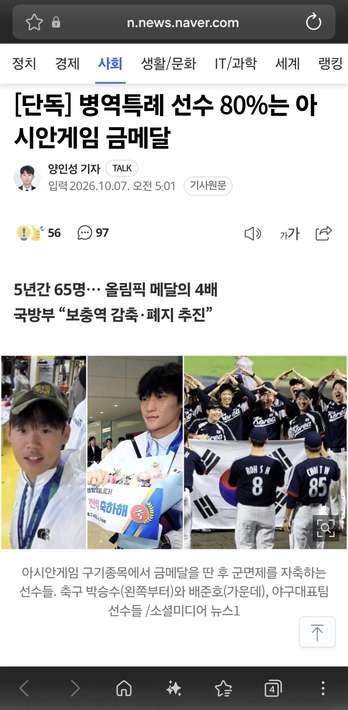
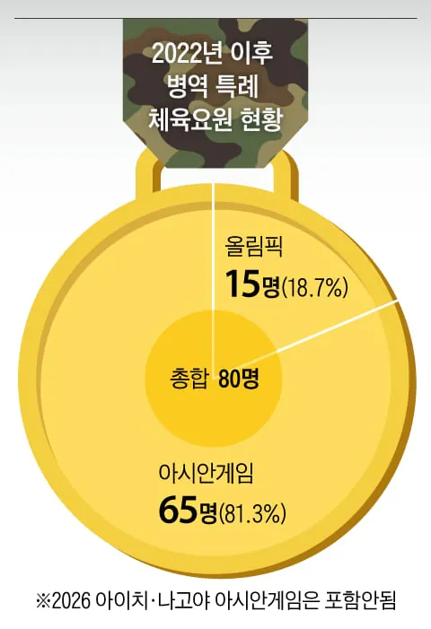

아무래도 선수단 인원이 존나 많으니
축구 야구 선수들이 상당수일듯
아시안게임 올해꺼반영하면 축구20명 ,야구 16명 롤포함 각종종목에서 11명정도받음 ㅇㅇ 총 47명정도됨
n분의 1해 금메달 하나가 2년 빼준다치고 축구 20명 2년 N빵해
아시안게임 병특을 아예 폐지해야함
예술체육요원 전체를 폐지해야지
올림픽은 전세계 경쟁이니 ㄹㅇ 빡세지만 아겜은 진짜 동네잔치잖아..
사실상 축구 야구는 아겜이 어떻게 보면 제일 안정적인 루트였는데 ㅋㅋㅋ
동네잔치 수준도 아님.
한중일 말고는 제대로 된 경쟁자도 없는데다가 종목 빨만 잘 타면 국대선발=자동 금메달 최소 은메달인 수준인 종목도 많음. 이것도 못한다? 패자부활전인 단체전으로 살려줌 ㅋㅋㅋ
일단 아겜은 폐지하는게 맞지
고작 저걸로 빼주면서 bts는 끌고간 병신나라 ㅋㅋ
근데 BTS는 저런거 없었어도 팬클럽이름이 ARMY라서 안가는순간 개 짜쳐됨 ㅋㅋㅋㅋㅋ
아시안은 금메달
올림픽은 동메달 이상
걍 병특 자체를 없애야지
너 전주대사습놀이라고 아냐
헛소리하지말고 눈치챙겨라 게이야
윗놈이 기준을 잘못알길래 알려준건디 헛소리로 쳐 하고잇누
콩쿨도 쳐내자
국방개혁 열사 3인
올림픽까지는 그렇다쳐도 아겜은 진짜 왜 병특있는지 이해가안됨 ㅋㅋ 걍 이참에 싹다없애
차라리 세선금메달이 낫지 않나 유도종목 한정으로 아겜에 일본 1군선수들 나오지도 않더만
예술체육요원 걍 싹 쳐내고 전문연이나 확실하게 지원해줘라
좆같은 3+1땜에 다 미박가잖아 ㅅㅂ
개좆밥 아시안게임 하지말라고 축구면 월드컵, 야구면 WBC, 그외는 올림픽 아님 세계 선수권대회에서 하라고
만약 손흥민 같은 선수 나오면 군대 갔다와야하나
차별을 좀 두면 좋겠음. 최소 30분은 튄 선수들로 해서
그건 bts도 갔는데로 정리된거 아니누
단체 종목 자체가 선수구성부터 전략이고 이미 한 몸인 상태로 봐야지 상황이 그렇게 주어져서 A전략을 구사했을 뿐임 다른 상황이었으면 B전략으로 할 수도 있는거고
맨 왼쪽은 관상이 잘갈구는 선임상이네
올릭픽하고 아시안게임만 묶어놓으면 당연히 아시안게임 비율이 높겠지
지금 계속 메달로 인한 군면제로만 타겟 잡히고 있는데 국내 지원자가 대부분으로 돈 박다보면 상 받는 콩쿨, 메달로 인한 면제 혜택은 당연히 없어져야하는게 맞음 축구 야구는 상무 안없애는 것도 고맙게 생각해야지 ㅋㅋㅋ 지금 타겟으로 둘 곳은 메달로 연금 주는거나 세금 들어가는 실업팀, 케이리그 전면 재검토 해야됨 높은 분들이 쌀먹하고 남는 돈으로 실력도 없는 버러지들 세금으로 생활비 주는 셈임 ㅋㅋㅋ
그러고보면 금메달 따기 엄청 어려운 소수 종목보다는
금메달 자주따는 축구 야구로 편중되있긴하지
예술쪽도 함 봐야할듯 그쪽이 더 꿀이더라 ㅋㅋ 국내에서 국제대회라고 열고
개인의 영광일 뿐
체육말고 예술은?
개인적으로 스포츠는 잔바리 쳐내고 올림픽 금만 줘야 됨 예술쪽은 빌보드 핫100 1위 정도
걍 다 없애야됨
자 올해부터 바로 소급 드가자
일본 야구는 사회인 야구단, 축구는 u-21로 구성 됐었음.
일본 쉴드칠 생각도, 한국이 최선을 다하는거에 뭐라할것도 아니지만 이걸 이겼다고 군면제 주는게 진짜 맞나...
국위선양의 기준도 시대에 따라 변해가야지 30년전기준을 아직도 쓰면 되나
지들 밥 벌어 먹으려고 하는 직업인데 프로들이 우글우글 몰려가 아마추어 나오는 대회서 성과냈다고 병역면제 혜택에 연금까지 낭낭하게 추가로 특별공급까지 이야
올림픽 말고는 병특 다 없애야 함 올림픽도 차차 없애야 맞다고 봄
"뭐? 국위선양? BTS도 다녀왔음"
이거만한 가불기 없음
폐지 하고 싹 다 입대 시켜라
아겜은 애초에 왜준거야
사실상 농어촌전형인데 이번기회에 걍 군면제포함 연금,부동산특공까지 다 없애버려야함
아겜은 빼자
야구 WAR 지표같은거 적용해서
야구 상위 8명,
축구 상위 6명
농구 상위 4명
이렇게만 병역혜택
(3~4년동안 비시즌에 나눠서 복무)
이렇게 어떨까?
ㅋㅋ ㄱㄷㅈ들이 또 신나서 지들끼리 물고 뜯고잇네. 이러니 헬피엔딩만나지.
예술쪽도 3대 국제콩쿨 외엔 싹 다 특례 없애야 함
야구 축구가 절반 아닌가